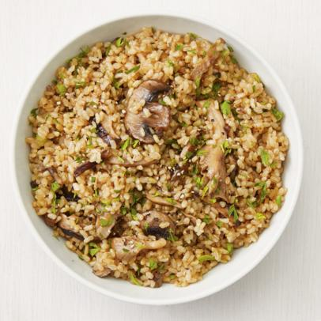

Jollof Rice
$40
Jollof rice is one of the best nigerian dishes
and it is tasty also, can be garnished with different assortive meals of your choice.
Jollof is well-done and seasoned properly and contains lots of vitamins.

Fried Rice
$40
Fried rice, not just a nigerian meal, but also and african meal that looks and tastes so satisfying, the meal is made with so many ingredients and its usually eaten at special occassions and programs, showing the significance of good meala and great eating.

Pilov Rice
$40
Pilov which is almost like the normal white rice, is made with lots of love and passion. there are lots of ingredients been out into the making of this delicious meal.
Rice and stew
$40
The rice and stew is acommon meal all round the world, mostly eaten by the british, the stew is made up of tom\toes \nd some ingredients of natural spices giving it a very sweet taste and satisfaction to the soul of eating.
Chicken
$20
Chicken is known internationally and many miggt have believed its the most nutrious and sweet protein till date.
Our chicken is seasoned well with proper ingredients and they come as they look. We always get the fresh chickens daily and prepare them, just for you.

Beef
$20
Beefs which are common from animals, mostly cows and goats are so delicious when well prepared. Our resturant makes the best beef meat you will ever taste and we are so eager and can not wait until you have it for a tryout.
Gizzard
$15
Almost like gizzard, but not exactly, they a bvery soft flesh part from animals used as meat and they well seasoned with spices also when fried, they tatste super delicious.
Plantain
$10
Plantain which is mostlly common in african is known for its nutrious content, gotten from the plantain tree in most west-aftican countries. They have and outstanding taste and they could either be boiled or fried.